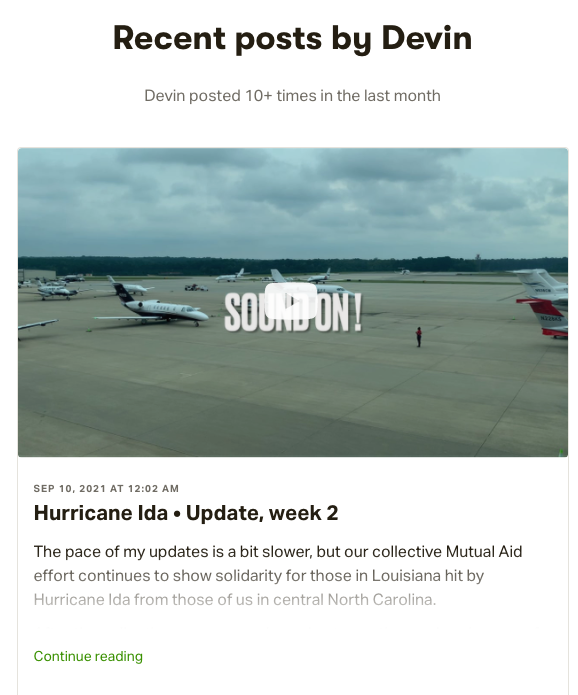

More about Mutual Aid work and Philosophy
Triangle Mutual Aid has a Publishing Collective! Our Patreon blog contains many entries not only about our Mutual Aid efforts, but also about the philosophy behind Mutual Aid and wisdom shared from the experience of our collective members.
In addition to being informational, educational, and sometimes entertaining, our Patreon site is our primary source of income. Please choose a subscription level that is right for you!
Hurricane Helene
Tropical Storm Debby
Hurricane Ian
Local Free Food Pantries
Covid Rapid Tests: Homeless Shelter and Neighborhood Pooling
A few local Mutual Aid efforts
On Hurricane Ida Mutual Aid response:
On Community-based (Mutual Aid) Covid-19 response:
On Mutual Aid generally as a concept:
Our Facebook Page
As problematic as Facebook is in so, so many ways, our page there is a good place to find up-to-date information from several of our collective members. Check it out if you're into FB :-)